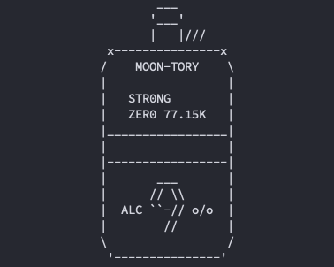

Work



JapanPostBank CoinHandlingFee Simulator
HTML, CSS, JavaScript, Python, Docker
ゆうちょ銀行のATMでは硬貨の取扱枚数ごとに手数料(硬貨預払料金)が設定され，差し引かれます．
このツールは設定した硬貨枚数から，手数料の割合(硬貨預払料金/投入金額)が最小となるような組み合わせを探索します．
(バックエンドですが，)デバイスの負荷軽減と高速化のため，シミュレーションをブラウザ上ではなく，サーバに計算させてRest APIのやり取りで実行できるようにしました．